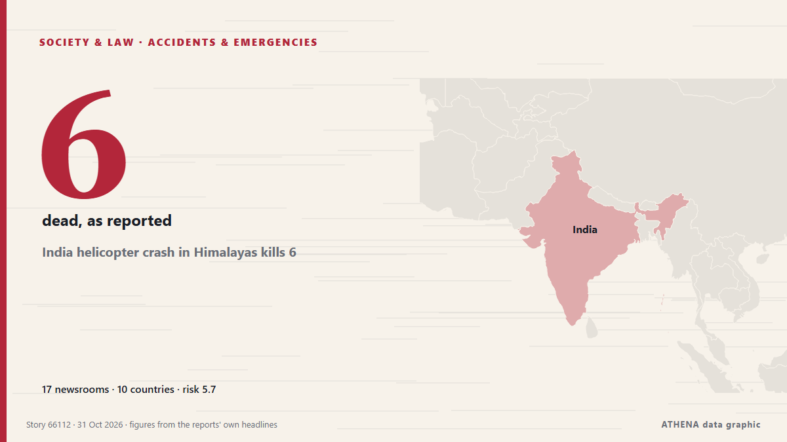

India helicopter crash in Himalayas kills 6

Police said efforts were under way to recover the bodies from the remote crash site, while the cause of the accident remained unknown. von Free Malaysia Today
Unabhängig gemeldet von 17 Medien in 10 Ländern seit dem 30. Okt., zuerst von Express Tribune; die Berichterstattung flaut ab. ATHENA stuft das Risiko als erhöht ein (5.7/10), vor allem wegen der Schwere des beschriebenen Schadens und seiner geografischen und sektoralen Reichweite. Die Konfidenz liegt bei 83 % (hoch): 17 Medien bestätigen es unabhängig, bei einer mittleren Verlässlichkeit der Quellen von 73 %. Medien nach Land: Indien (15), Pakistan (4), China (2). Berichterstattung: 30. Okt. bis 31. Okt., 33 Stunden.
Warum es wichtig ist: Rechtliche und politische Änderungen verändern Rechte, Pflichten und öffentliche Leistungen für die Betroffenen.
Was sich geändert hat: 3 neue Berichte von 3 Redaktionen in den 24 Stunden bis 31. Okt..
Erste Schlagzeile: Six feared dead in helicopter crash in Indian Himalayan state
Schlagzeilen werden auf Englisch angezeigt, wie veröffentlicht.
Auf einen Blick
Ausgewählt, bewertet und geschrieben nach der veröffentlichten Methodik von ATHENA. Kein Redakteur greift in einzelne Ereignisse ein. So entsteht ATHENA ›
| 30 Oct 07:31 UTC | 3 |
|---|---|
| 30 Oct 09:31 UTC | 10 |
| 30 Oct 11:31 UTC | 6 |
| 30 Oct 13:31 UTC | 6 |
| 30 Oct 15:31 UTC | 1 |
| 30 Oct 17:31 UTC | 0 |
| 30 Oct 19:31 UTC | 0 |
| 30 Oct 21:31 UTC | 0 |
| 30 Oct 23:31 UTC | 2 |
| 31 Oct 01:31 UTC | 0 |
| 31 Oct 03:31 UTC | 0 |
| 31 Oct 05:31 UTC | 0 |
| 31 Oct 07:31 UTC | 0 |
| 31 Oct 09:31 UTC | 0 |
| 31 Oct 11:31 UTC | 0 |
| 31 Oct 13:31 UTC | 0 |
| 31 Oct 15:31 UTC | 1 |
| 30 Oct 10:54 UTC | 0.0 |
|---|---|
| 30 Oct 12:05 UTC | 3.3 |
| 30 Oct 12:47 UTC | 6.1 |
| 31 Oct 16:28 UTC | 5.7 |
Warum diese Zahlen
Bedeutung
Risiko
Konfidenz
Die Berichterstattung – wer berichtete, und wann
Schlagzeile wie veröffentlicht · öffnet das Original- Express Tribune · PakistanSix killed in helicopter crash in Indian Himalayan state, ANI says
- Times of India · IndienChopper with 6 on board crashes near Joshimath; rescue ops under way
- Hindustan Times · IndienBadrinath helicopter crash: 6 killed as chopper crashes near Joshimath; CM Dhami orders probe
- Indian Express · IndienPilot, pilgrims among 6 dead in Uttarakhand helicopter crash in bad weather
- Times of India · IndienUttarakhand chopper crash: Helicopter wreckage found - key points
- Hindustan Times · IndienHelicopter flying from Badrinath lost communication, tracking over Joshimath valley moments before crash
- BBC News · Vereinigtes KönigreichSix dead after helicopter crashes in northern Indian state
- The Hindu · IndienUttarakhand chopper crash: All six on board killed, says Chamoli District Magistrate
- Indian Express · IndienVideo shows helicopter with 6 onboard moments before crash in Uttarakhand
- NEWS.am (English) · ArmenienIndia helicopter crashes in Himalayas
- NDTV · IndienUttarakhand Joshimath Helicopter Crash Highlights: Karnataka Cop Among 6 On Helicopter That Crashed In Uttarakhand
- Hindustan Times · IndienBadrinath helicopter crash: A look at 10 chopper mishaps in Uttarakhand over the years
- Xinhua (English) — page reader · ChinaHelicopter carrying 6 crashes in India's Uttarakhand
- Hindustan Times · IndienBadrinath helicopter crash highlights: Darkness, difficult terrain delay recovery of bodies, AAIB to probe accident
- APA (English) · AserbaidschanSix feared dead in helicopter crash in Indian Himalayan state, media report
- NDTV · IndienDelhi Pilot, Bengaluru Cop And Lawyer Among 6 Dead In Uttarakhand Chopper Crash
- CNA (Channel NewsAsia) · SingapurSix feared dead in helicopter crash in Indian Himalayan state
- NDTV · Indien6, Including Pilot, On Board Uttarakhand Chopper Killed In Crash
- Ada Derana · Sri LankaSix feared dead in helicopter crash in Indian Himalayan state
- Business Recorder · PakistanSix killed in helicopter crash in Indian Himalayan state
- Scroll.in · IndienUttarakhand: Six killed as helicopter crashes near Joshimath
- Daily Mirror · Sri LankaHelicopter carrying six people crashes in northern Indian state
- Free Malaysia Today · MalaysiaIndia helicopter crash in Himalayas kills 6
- Indian Express · IndienWhy are so many helicopters crashing in Uttarakhand? The risks explained
- Hindustan Times · IndienBengaluru crime branch official, lawyers, Delhi pilot among 6 killed in Uttarakhand helicopter crash
- Express Tribune · PakistanSix killed in India helicopter crash
- Business Recorder · PakistanIndia helicopter crash kills six
- Xinhua (English) — page reader · ChinaAll 6 on board killed in helicopter crash in India's Uttarakhand
- The National · Vereinigte Arabische EmirateUAE expresses solidarity with India, conveys condolences over victims of helicopter crash